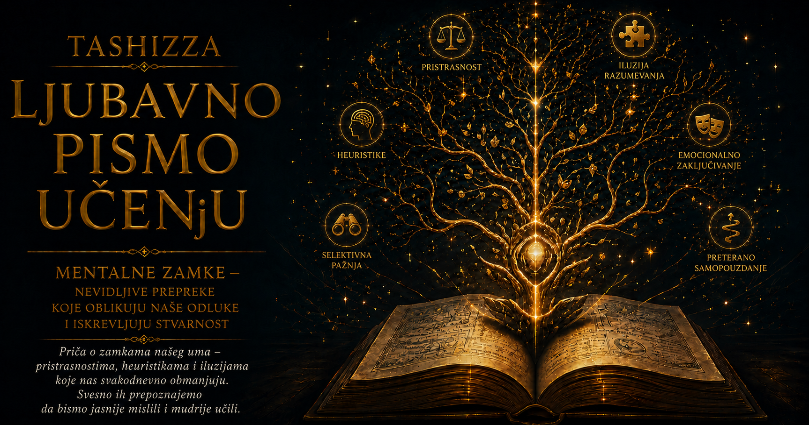

Ljubavno pismo učenju

Četiri prethodne priče povezuje jedno uznemirujuće, ali oslobađajuće saznanje: ljudski um može biti obrazovan, logičan i iskreno posvećen istini, a ipak pogrešiti zbog načina na koji bira pretpostavke, tumači tuđe postupke, određuje granice dokaza i prihvata nasleđene obrasce mišljenja. Vilijam Okam, Hanlonova britva, Kurt Gedel i Tomas Kun prilaze tom problemu iz različitih pravaca. Kada njihove ideje objedinimo, dobijamo izuzetno upotrebljiv instrument za prepoznavanje mentalnih zamki — tih nevidljivih skretanja zbog kojih um, uveren da napreduje prema razumevanju, ponekad samo učvršćuje sopstvenu zabludu.
Mentalne zamke ne nastaju isključivo iz neznanja. Često se rađaju iz znanja koje je ostalo neispitano, iz iskustva pretvorenog u nepromenljivo pravilo, iz brzog zaključka koji je nekada bio koristan ili iz objašnjenja koje je vremenom postalo važnije od stvarnosti koju bi trebalo da opisuje. Um ne prima svet kao savršeno čist odraz. On iz mnoštva utisaka bira ono što smatra važnim, dopunjava praznine, prepoznaje obrasce, predviđa opasnosti i povezuje događaje u smislenu priču. Ta sposobnost omogućava nam da učimo i snalazimo se, ali nas istovremeno izlaže opasnosti da u činjenice neprimetno unesemo sopstvena očekivanja.
Okamova oštrica pruža prvi korak u odbrani od takvih grešaka: uklanjanje pretpostavki koje objašnjenju ne donose stvarnu snagu. Kada pokušavamo da razumemo neki događaj, lako stvaramo raskošnu priču ispunjenu skrivenim uzrocima, nevidljivim vezama i nedokazanim namerama. Složenost tada može ostaviti utisak dubine, premda samo prikriva odsustvo pouzdanih dokaza. Okam nas poziva da zastanemo i proverimo koliko elemenata naše priče potiče iz opažanja, a koliko smo ih dodali zato što teško podnosimo nedorečenost.
Ova intelektualna štedljivost ne traži od nas da osiromašimo stvarnost. Priroda, društvo i ljudski odnosi zaista mogu biti složeni, višeslojni i ispunjeni uzrocima koji deluju istovremeno. Oštrica nas uči da složenost prihvatimo onda kada je potvrđena, a ne onda kada nam je potrebna da bismo zaštitili omiljeno uverenje. Dobro objašnjenje sadrži onoliko pretpostavki koliko činjenice zahtevaju, pri čemu svaka dodatna tvrdnja mora doprineti razumevanju, proveri ili predviđanju. Tako jednostavnost postaje oblik odgovornosti prema istini.
Hanlonova britva ovu disciplinu prenosi u područje ljudskih namera. Kada nas nečiji postupak povredi, um veoma brzo prelazi sa posledice na motiv: ako nam je naneta šteta, zaključujemo da je neko želeo da je nanese. Izostavljena poruka postaje omalovažavanje, tuđa greška prikrivena sabotaža, nepromišljena rečenica dokaz neprijateljstva. Takva tumačenja ponekad mogu biti tačna, ali njihova emocionalna uverljivost ne predstavlja dokaz. Um koji je uznemiren često daje prednost priči koja objašnjava bol, čak i kada nema dovoljno podataka da pouzdano objasni osobu koja ga je izazvala.
Hanlonova opomena vraća u razmatranje mogućnosti koje ljutnja lako potiskuje: neznanje, rasejanost, umor, nesporazum, lošu organizaciju, različita očekivanja, nedostatak iskustva ili ograničene sposobnosti. Time se odgovornost ne ukida, niti se stvarna zloupotreba proglašava bezazlenom. Razdvajanjem posledice od pretpostavljene namere dobijamo precizniju osnovu za delovanje. Možemo zahtevati ispravku štete, postaviti granicu ili promeniti način saradnje, a da prethodno ne izgradimo čitavu optužnicu od motiva koje nismo proverili.
Okamova i Hanlonova britva zajedno stvaraju moćnu početnu proveru: koliko smo nedokazanih činilaca dodali događaju i da li smo među njih prerano uključili zlu nameru? Njihova združena primena može sprečiti sukob koji bi nastao iz pogrešnog tumačenja, ali i ubrzati rešavanje praktičnih problema. Kada računar prestane da radi, korisnije je proveravati napajanje, veze, nedavne izmene i poruke o grešci nego odmah pretpostaviti nečiju sabotažu. Kada saradnik zakasni sa odgovorom, razboritije je najpre utvrditi okolnosti nego od tišine načiniti dokaz nepoštovanja. Tako se misaona disciplina pretvara u bolju komunikaciju, pravednije procene i delotvornije odluke.
Međutim, ni pažljivo uklanjanje suvišnih pretpostavki ne može nam obezbediti potpun pogled. Gedelova otkrića nastala su u strogo određenom području matematičke logike i ne treba ih pretvarati u neodređenu tvrdnju da se ništa ne može pouzdano znati. Njihova dublja intelektualna pouka ipak doseže daleko: dovoljno bogat formalni sistem može sadržati istinite iskaze koje nije moguće dokazati njegovim sopstvenim sredstvima, dok svoju neprotivrečnost ne može jednostavno potvrditi oslanjajući se samo na sebe. Čak i tamo gde vladaju precizno definisana pravila pojavljuju se granice onoga što sistem može da ustanovi iz sopstvene unutrašnjosti.
U svakodnevnom mišljenju ta pouka podstiče oprez prema uverenju da jedan okvir mora sadržati sve što je potrebno za procenu samoga sebe. Porodica može godinama ponavljati određeni obrazac i smatrati ga prirodnim zato što se svako njegovo opravdanje izvodi iz porodičnih pravila. Organizacija može meriti uspeh pokazateljima koje je sama izabrala, a zatim tim rezultatima dokazivati da je izabrala dobra merila. Čovek može sopstveno uverenje proveravati samo pitanjima koja to uverenje dopušta. U svim tim slučajevima unutrašnja doslednost može postojati zajedno sa veoma ograničenim pogledom.
Izlazak iz takve zamke zahteva susret sa nečim što okvir nije unapred prilagodio sebi: drugačijim iskustvom, spoljašnjom proverom, protivprimerom, novim jezikom ili pitanjem koje ranije nismo umeli da postavimo. Gedelova misao tako dopunjuje Okamovu. Posle uklanjanja nepotrebnih pretpostavki moramo se zapitati da li smo među njima nehotice uklonili mogućnost da naš sistem ima granicu. Najurednije objašnjenje može ostati nepotpuno, a osećaj zatvorenosti i logičke celovitosti ne daje nam pravo da ga proglasimo konačnim.
Tomas Kun otkriva društvenu i istorijsku dimenziju istog problema. Ljudi ne razmišljaju u praznini, oslonjeni samo na ličnu logiku. Uče jezik određene zajednice, usvajaju njene uzorne probleme, prihvataju merila uspešnog objašnjenja i postepeno stiču sposobnost da svet vide onako kako ga njihova disciplina, kultura ili vreme razvrstavaju. Paradigma omogućava organizovano istraživanje jer određuje koja pitanja imaju smisla, koje metode ulivaju poverenje i kakav rezultat predstavlja valjan odgovor. Bez takvog zajedničkog okvira znanje bi se rasipalo u nepovezane pokušaje.
Upravo zbog svoje korisnosti paradigma može postati mentalna zamka. Što uspešnije uređuje iskustvo, teže primećujemo ono što ne ume da obuhvati. Neočekivanu pojavu pokušavamo da uklopimo u poznate kategorije, neuspeh pripisujemo pojedinačnoj grešci, a sve ozbiljnije anomalije okružujemo pomoćnim objašnjenjima. Ponekad je takva istrajnost opravdana, jer jedna nepravilnost ne obara teoriju koja je dugo pouzdano služila. Teškoća nastaje kada odbrana okvira postane važnija od istraživanja stvarnosti, pa se svaki protivprimer proglašava nevažnim samo zato što nema mesto u postojećem poretku.
Kunova ideja čini Gedelovu opomenu još životnijom. Granice našeg pogleda mogu biti utkane u čitavu zajednicu, obrazovanje i stručni jezik, zbog čega ih pojedinac ne prepoznaje kao granice. Svi oko njega postavljaju slična pitanja, koriste ista merila i potvrđuju jedni drugima da je zajednička slika sveta očigledna. Saglasnost tada pruža osećaj sigurnosti, ali sama po sebi ne dokazuje da su iscrpljene sve mogućnosti razumevanja. Istorija nauke pokazuje da veoma obrazovani i savesni ljudi mogu dugo raditi unutar paradigme čije će osnovne pretpostavke buduće generacije preurediti.
Integracija ove četiri ideje daje nam promišljen redosled ispitivanja. Najpre Okam pita koje smo pretpostavke uveli bez potrebe. Hanlon zatim proverava da li smo među njima nedokazano pripisali lošu nameru. Gedel nas upozorava da čak i pročišćeno objašnjenje može imati unutrašnje granice koje iz njegove perspektive ne uspevamo da vidimo. Kun proširuje pogled na paradigmu koja određuje šta smatramo činjenicom, važnim pitanjem i prihvatljivim dokazom. Svaki od ovih koraka ispravlja drugačiju slabost, dok njihova zajednička snaga sprečava da jedan misaoni alat pretvorimo u univerzalni odgovor.
Zamislimo školu u kojoj učenici godinama postižu slabije rezultate. Jedno složeno objašnjenje može govoriti o čitavom nizu skrivenih osobina nove generacije. Okamova oštrica traži da se najpre provere neposredni činioci: program, način nastave, veličina odeljenja, dostupnost materijala, kriterijumi ocenjivanja i uslovi u kojima deca uče. Hanlonova britva sprečava da se teškoće odmah protumače kao lenjost učenika ili ravnodušnost nastavnika. Gedelova pouka otvara pitanje može li škola sopstveni uspeh pouzdano proceniti samo merilima koja je sama ustanovila. Kun zatim usmerava pažnju na dublji okvir: kakvu predstavu o znanju, autoritetu, grešci i učenju ta škola prenosi iz generacije u generaciju?
Sličan postupak može pomoći u medicini, programiranju, upravljanju ustanovama, novinarstvu, porodičnim odnosima i javnim raspravama. Lekar mora izbeći nepotrebno zamršenu dijagnozu, ali i priznati kada simptomi zahtevaju složenije objašnjenje. Programer proverava najverovatnije izvore greške, a zatim ispituje pretpostavke ugrađene u arhitekturu čitavog sistema. Novinar razlikuje potvrđene činjenice od priče o motivima, dok odgovorna zajednica povremeno preispituje merila prema kojima odlučuje kome veruje. U svakom području kvalitet mišljenja raste kada se jednostavnost, uzdržanost u proceni namera, svest o granicama i otvorenost prema promeni okvira primenjuju zajedno.
Ove ideje istovremeno nas čuvaju od međusobnih preterivanja. Okamova oštrica bez svesti o granicama može postati izgovor da odbacimo sve što je složeno. Hanlonova britva bez pažnje prema dokazima može nas učiniti naivnim pred stvarnom manipulacijom. Pozivanje na Gedela može se zloupotrebiti kao ukrasna tvrdnja da je svako znanje nemoćno, dok površno shvaćena promena paradigme može svaku neobičnu zamisao predstaviti kao buduću revoluciju. Integrisana primena zahteva meru: jednostavnije objašnjenje ima prednost među podjednako uspešnim objašnjenjima, dobra namera se ne pretpostavlja nasuprot dokazima, granice znanja ne poništavaju ono što je pouzdano utvrđeno, a novi okvir svoju vrednost potvrđuje sposobnošću da objasni, predvidi i otvori plodan prostor za dalje istraživanje.
Najopasnije mentalne zamke često su praćene prijatnim osećajem izvesnosti. Čovek tada ne oseća da nagađa, jer mu se sopstveni zaključak čini očiglednim. Ne primećuje pretpostavke koje je dodao, motive koje je pripisao, granice sistema koje je prihvatio ni paradigmu kroz koju posmatra događaj. Zbog toga inteligencija sama ne pruža dovoljnu zaštitu. Sposoban um može veoma vešto pronalaziti razloge za ono u šta je već odlučio da veruje, gradeći sve složeniju odbranu oko početne greške.
Prava intelektualna snaga pokazuje se u spremnosti da sopstvenu misao izložimo istoj proveri koju zahtevamo od tuđe. Ona se prepoznaje kada umemo da kažemo da nešto još ne znamo, kada odvojimo opažanje od tumačenja, kada potražimo podatak koji bi mogao osporiti naš zaključak i kada saslušamo osobu čije iskustvo otkriva slepu tačku našeg sistema. Takva skromnost ne slabi znanje. Ona mu omogućava da se ispravlja, raste i ostane povezano sa stvarnošću.
Učenje zato obuhvata mnogo više od prikupljanja činjenica. Ono zahteva negovanje unutrašnje slobode pred sopstvenim navikama mišljenja. Čovek koji ume da pojednostavi problem bez njegovog osiromašenja, da proceni postupak bez izmišljanja motiva, da prizna granice sopstvenog sistema i da prepozna trenutak kada stara paradigma više ne obuhvata iskustvo stiče dragocenu sposobnost: može menjati mišljenje bez osećaja da je time izgubio sebe.
Okam, Hanlon, Gedel i Kun zajedno nas uče da istina zahteva i oštrinu i blagost. Oštrinu prema suvišnim pretpostavkama, neproverenim zaključcima i okvirima koji sebe štite od svake kritike; blagost prema ljudskoj ograničenosti, sopstvenim greškama i sporom procesu kroz koji se razumevanje menja. Njihove ideje pronalaze zajedničku svrhu u stvaranju uma koji ne žuri da presudi, ne zaljubljuje se u složenost, ne poistovećuje saglasnost sa istinom i ne proglašava trenutni horizont krajem mogućeg znanja.
Mentalna zamka gubi deo svoje moći onog trenutka kada postane vidljiva. Tada možemo zastati pred sopstvenom sigurnošću i zapitati se šta zaista znamo, šta samo pretpostavljamo, kojim pravilima proveravamo svoj zaključak i postoji li ugao iz kojeg čitav problem izgleda drugačije. U tom zastajanju počinje zrelo kritičko mišljenje, a sa njim i jedna od najvažnijih sloboda koju učenjem stičemo: sloboda da svet ne posmatramo samo kroz ono što smo nasledili, navikli ili poželeli da bude istina.